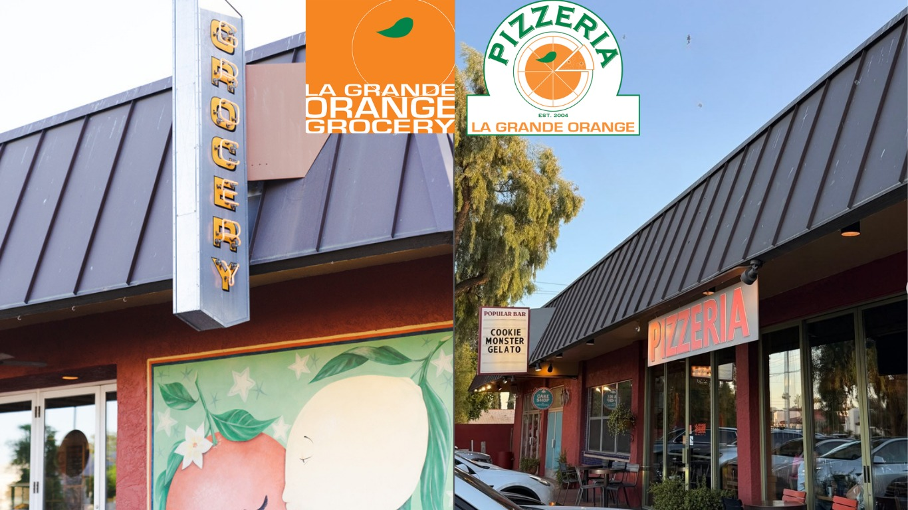

Arcadia Real Estate: Phoenix's Front Porch Neighborhood
Welcome to Arcadia
Phoenix's front-porch neighborhood, built on citrus groves and canal pathsWhat to Love
- Mature citrus trees and shaded, walkable streets
- The Arizona Canal path for running, biking, and walking
- Iconic restaurants: La Grande Orange, Postino, Chelsea's Kitchen
- 8 to 10 minutes from Old Town Scottsdale and Sky Harbor
What is Arcadia known for?
Arcadia is one of Phoenix's most established neighborhoods, developed on former citrus orchards and known for lush landscaping, sprawling ranch homes, and a lifestyle built around the Arizona Canal, bicycles, and front porches. Mature grapefruit, orange, and lemon trees still line many streets, creating a canopy of greenery that is uncommon in the Sonoran Desert.
Unlike newer master-planned communities, Arcadia evolved organically over decades, so every street has its own character, with a mix of restored ranch homes, cottages, and custom estates.
How far is Arcadia from Scottsdale and Phoenix?
Arcadia straddles Phoenix and Scottsdale, and sits minutes from both Downtown Phoenix and Old Town Scottsdale — a convenient, central Metro Phoenix location close to high-end retail and dining.
| Destination | Typical Drive Time |
|---|---|
| Old Town Scottsdale | 8–10 minutes |
| Downtown Phoenix | 10–15 minutes |
| Arizona Biltmore | 10 minutes |
| Phoenix Sky Harbor International Airport | 10 minutes |
Arcadia also has quick access to SR-51, Loop 202, and Loop 101. [VERIFY current drive times against real-time traffic]
What outdoor features define Arcadia?
The Arizona Canal winds along Arcadia's southern edge, and the canal paths have become a neighborhood gathering place for running, biking, walking, and dog walking. Camelback Mountain rises to the north, providing a backdrop and hosting some of Arizona's most-used hiking trails, including the Echo Canyon Trailhead.
What restaurants and landmarks are in Arcadia?
Arcadia is home to several well-known Valley restaurants, including La Grande Orange Grocery & Pizzeria, The Henry, Ingo's Tasty Food, Postino Arcadia, and Chelsea's Kitchen. Nearby landmarks include Camelback Mountain, the Arizona Canal, the Arizona Biltmore, and the Echo Canyon Trailhead.
What do homes in Arcadia look like?
Arcadia is known for generous lot sizes and a mix of classic ranch homes, mid-century architecture, farmhouse-inspired renovations, and new transitional or contemporary custom estates. Most homes sit on quarter- to half-acre lots, with premier properties approaching a full acre.
What schools serve Arcadia?
Arcadia is served by Hopi Elementary School, Ingleside Middle School, and Arcadia High School, along with nearby private schools including Phoenix Country Day School, Brophy College Preparatory, and Xavier College Preparatory. [VERIFY current school boundaries for a specific address]
What should buyers know before purchasing in Arcadia?
Because Arcadia developed organically rather than as a master-planned community, lot size, mature tree canopy, and proximity to the canal path vary significantly street to street, so buyers should walk a specific block rather than relying on the neighborhood's overall reputation.
Older ranch homes may require updates to plumbing, electrical, or irrigation systems tied to legacy citrus-grove infrastructure; a pre-purchase inspection is particularly useful for original, unrenovated homes. [VERIFY inspection scope with a licensed inspector]

Common Questions
Why does Arcadia have so many citrus trees?
Arcadia was originally developed on citrus orchards, and mature grapefruit, orange, and lemon trees still line many streets today, giving the neighborhood a distinct green canopy uncommon elsewhere in the Sonoran Desert.
How far is Arcadia from Old Town Scottsdale?
Old Town Scottsdale is typically an 8- to 10-minute drive from Arcadia, making the two neighborhoods easy to move between for dining and entertainment.
What restaurants are within walking or biking distance in Arcadia?
La Grande Orange Grocery & Pizzeria, The Henry, Ingo's Tasty Food, Postino Arcadia, and Chelsea's Kitchen are all located within Arcadia and are popular with residents biking or walking along the canal path.
What lot sizes are typical in Arcadia?
Most Arcadia homes sit on quarter- to half-acre lots, with premier properties approaching a full acre, which is larger than typical lots in many newer Phoenix-area developments.


Considering a Move to Arcadia?
Call 480-734-0870 or email laura@laurajorden.com for current listings and market data.
Contact Laura